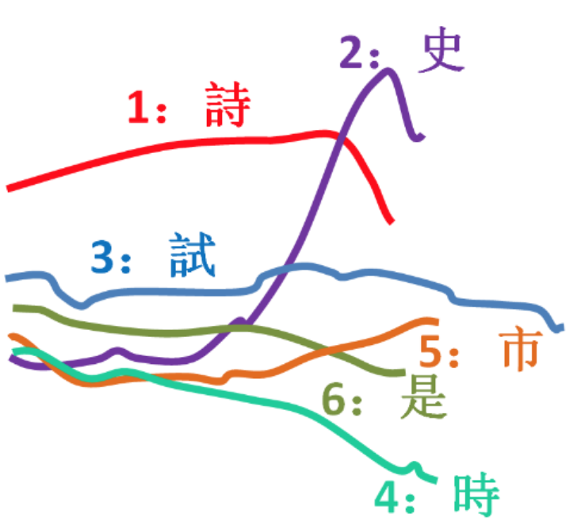

Research

Generally, I am interested in the acoustic and perceptual aspects of speech. Most of my recent studies focus on the problem of variability of speech, trying to answer (a) how speakers encode linguistic information in the acoustic space in different ways as a function of contextually flexible factors, based on acoustic measurements of lab-elicited and corpus-collected speech; and (b) how listeners take the social-contextual variabilities into account to uncover linguistically meaningful units from raw speech signals in their perception and processing behaviors. Besides, I have a long-lasting interest in suprasegmental aspects of speech, e.g., pitch, timing, intensity, voice quality, etc. My studies in this line focus on lexical tones and speech prosody.
The main topics of my research work are listed as follows:
Integration of social-indexical cues in linguistic processing
In spoken languages, linguistic meanings and social-indexical information of a talker are closely interwoven. Listeners not only find an interlocutor's speech more or less intelligible depending on their opinions about the speaker, but also hear different phoneme on the same piece of ambiguous signal depending on the perceived identity of the speaker. Studies in this vein extend to the field of social cognition and investigate questions such as how socio-indexical information is represented in listeners' brains and associated with linguistic variants, and how listeners consciously or unconsciously make use of these associations to form expectations, understandings (or misunderstandings) towards their interlocutors.
Flexibility of speech perception: compensation, adaptation, generalization
The acoustic realization of a particular phoneme may vary massively as a function of the linguistic environment, acoustic surrounding, social context, style, speech rate, talker identity, lexical properties, among others. Accordingly, listeners' speech perception mechanisms are very sophisticated and flexible. Listeners can not only adjust their phonemic boundaries perceived from ambiguous signals according to coarticulatory/ phonotactic/ lexical/ semantic contexts; they can also learn and memorize idiosyncratic acoustic distributions of phonemes for different talkers, and generalize the distribution to new talkers. This line of research investigates the linguistic and social structures that shape listeners' perceptual compensation, adaptation, and generalization.
Acoustics and perception of lexical tone variation
 While much attention has been attributed to the acoustic measurements of tonal contrast and the establishment of tone typology, fewer attempts are made to explore tone variability. Different from segment, tone is mainly realized by F0, which is more heavily dependent on the talkers' sex and vocal state, and less on the oral track. Some of my recent studies start to investigate how talker sex, vocal effort, and tonal contrast are simultaneously encoded in the F0 space, and how listeners manage to resolve the ambiguity caused by acoustic overlap. I also care about the variability of tonal shapes as a function of lexical and prosodic structures, and methods to modle this variability. Besides, I have always wanted to look at the diachronic change of neutral tones by lexical items.
Measurement and Perception of intonation and prosody
I am interested in the typology, phonologization, acoustics, perception, and modeling of intonation and prosody. My research on prosody is twofold. One aspect is the measurement of prosodic parameters, with the hope that reliable parameters will enable us to reliably visualize the underlying structure of prosody, and to separate them from extrinsic F0 byproducts unrelated to the core properties of intonation. I also did some tentative work is an important but relatively understudied field. The project aims to use perception as a window to probe the linguistically meaningful prosody patterns, which attribute contrasting interpretations for a speech stretch.